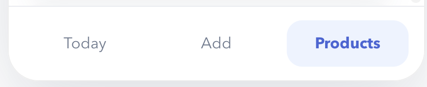
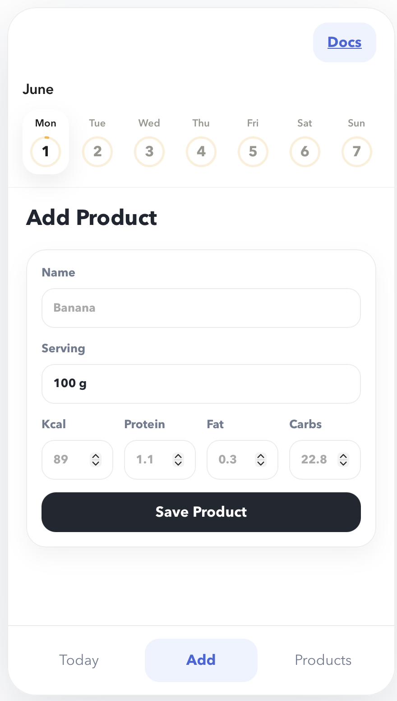
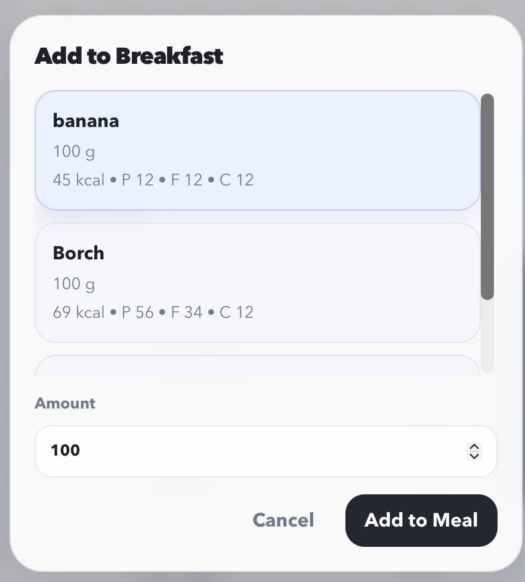
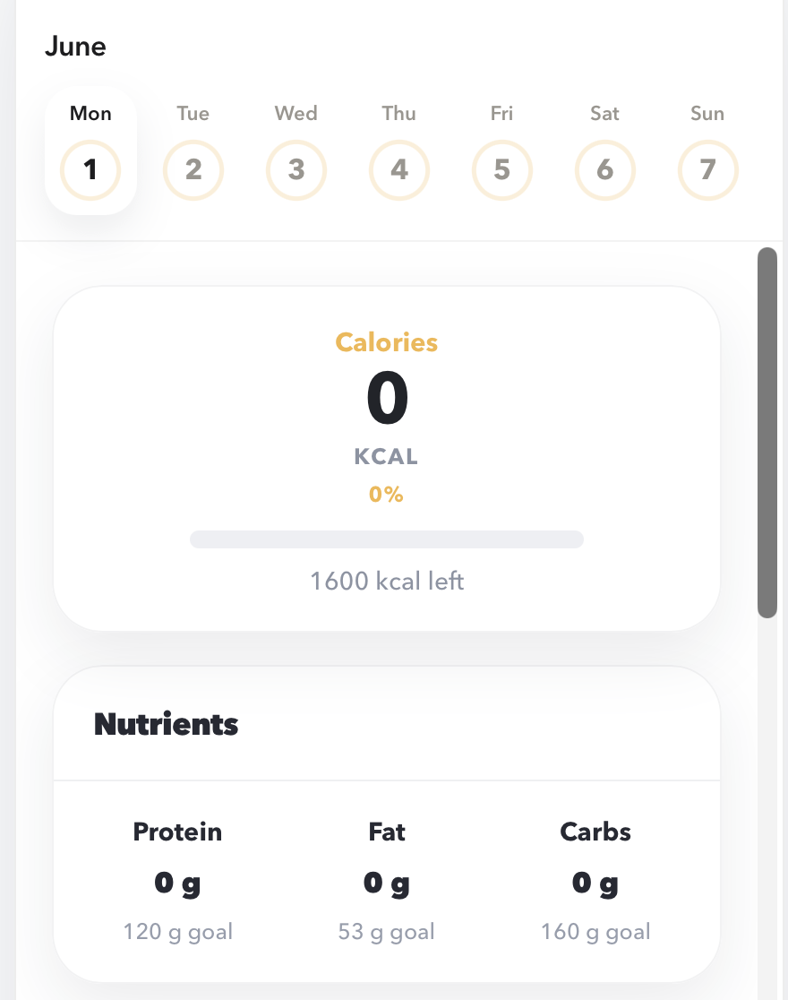
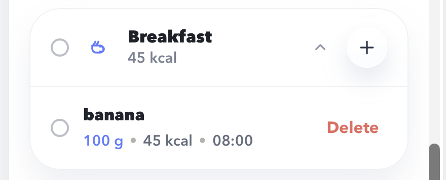
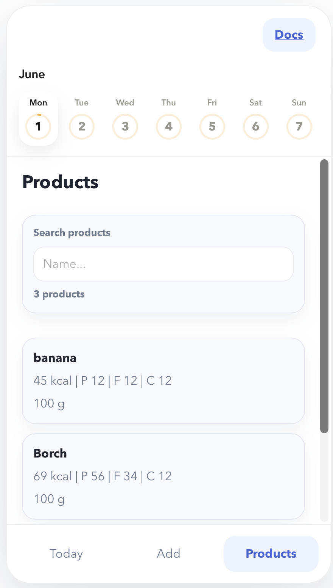

User Guide¶
This guide follows the normal user workflow inside Nutrio.
Main screens¶
| Screen | Purpose |
|---|---|
Today |
Review the selected day, add entries to meal sections, remove mistakes |
Add |
Create reusable food products |
Products |
Browse and search saved food products |

{ .app-shot .app-shot--wide }1. Create a product¶
Before you can log meals, you need at least one saved product.
- Open the
Addscreen. - Enter a product name.
- Enter a serving label such as
100 g. - Fill in
Kcal,Protein,Fat, andCarbs. - Click
Save Product.

{ .app-shot }!!! note
Nutrition values are stored as non-negative numbers. The default serving label is 100 g.
2. Log food into a meal section¶
- Open the
Todayscreen. - Find the meal section where the entry belongs.
- Click
+. - Select a saved product.
- Enter the amount in grams.
- Submit the dialog.
The app creates a day entry, recalculates totals, and refreshes the summary automatically.

{ .app-shot }3. Review daily progress¶
The summary card on top of the Today screen shows:
- consumed calories
- remaining calories
- daily progress in percent
- consumed protein, fat, and carbs
- target values for the tracked nutrients
Current built-in daily targets:
| Metric | Target |
|---|---|
| Calories | 1600 kcal |
| Protein | 120 g |
| Fat | 53 g |
| Carbs | 160 g |

{ .app-shot }4. Use the calendar and meal groups¶
Nutrio groups entries by calendar day and shows them in these sections:
- Breakfast
- Snack
- Lunch
- Second Snack
- Dinner
- Third Snack
Use the calendar at the top of the app to switch between days and inspect previous totals.
5. Remove an incorrect entry¶
- Open the correct day on the
Todayscreen. - Find the meal card containing the wrong entry.
- Click
Delete. - Wait for the summary to refresh.

{ .app-shot }6. Browse products¶
Open the Products screen to:
- inspect all saved products
- search by product name
- compare nutrition values quickly before logging a meal

{ .app-shot }